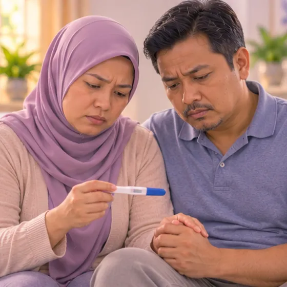

Gangguan ovulasi
Apabila ovari tidak melepaskan telur secara teratur, atau langsung tidak, lalu haid menjadi tidak teratur
Apa itu
Biasanya setiap bulan satu telur dilepaskan daripada ovari. Dengan gangguan ovulasi, ini tidak berlaku mengikut masa atau langsung tidak berlaku, dan ini boleh menjadikan haid tidak teratur serta menyukarkan kehamilan.
- Ovari dan hormon
- Wanita usia subur
- Haid tidak teratur atau tiada
- Jumpa doktor
- Doktor keluarga, pakar sakit puan atau pakar hormon (endokrinologi)
- Biasa pada
- Wanita usia subur; juga remaja dan wanita menghampiri menopaus
- Berjangkit
- Tidak
- Perjalanan
- Bergantung pada puncanya; doktor boleh mencari punca dan menerangkan pilihan
Tanda biasa

Haid tidak teraturHaid tidak teratur 
Sukar hamilKesuburan rendah
Tanda-tanda lain
- Pendarahan yang sukar dijangka, sangat sedikit atau sangat banyak
- Dengan sesetengah punca: bulu muka atau badan berlebihan, jerawat atau berat badan naik
Mengapa ia berlaku

Perubahan hormonPerubahan hormon 
Berat badan berlebihanBerat badan berlebihan 
Kesan sampingan sesetengah ubatKesan buruk ubat
Punca lain
- Sindrom ovari polisistik (PCOS) ialah punca yang biasa
- Ovari menjadi perlahan lebih awal, atau perubahan sebelum menopaus
Jumpa doktor dahulu jika
- Pendarahan sangat banyak, pengsan, atau sakit teruk mengejut di perut bawah: ke hospital segera
- Sakit perut atau pendarahan apabila anda mungkin hamil: ke hospital segera
- Pendarahan yang jauh lebih banyak daripada biasa atau berlarutan beberapa hari
- Tiada haid selama beberapa bulan apabila anda tidak hamil
- Cecair seperti susu keluar dari payudara semasa tidak hamil atau menyusu, atau sakit kepala atau perubahan penglihatan yang baharu
- Cuba mendapatkan anak untuk masa yang lama tanpa hasil: tanya doktor tentang pemeriksaan
Jika mana-mana berkenaan, sila jumpa doktor sebelum sesi.
Halaman ini ialah maklumat am. Sila terus mengambil ubat biasa anda dan terus berjumpa doktor.
Teruskan mengambil ubat biasa anda dan terus berjumpa doktor. Sesi kami ialah sokongan lembut dan tidak menggantikan rawatan perubatan.
Menjaga diri

Makan makanan seimbangDiet seimbang 
Tidur yang cukupTabiat tidur yang baik 
Tanya ahli farmasiNasihat ahli farmasi
Lebih banyak cara menjaga diri
- Catat haid anda dengan mudah (tarikh mula, aliran, sakit) untuk ditunjukkan kepada doktor
- Teruskan mengambil ubat yang doktor beri, dan tanya dahulu sebelum membuat sebarang perubahan
Beritahu ahli terapi anda
- Kehamilan
- Perentak jantung atau implan logam
- Ubat pencair darah
Ahli terapi anda akan menyemaknya bersama anda sebelum bermula.
Soalan dan jawapan
Apakah Gangguan ovulasi?
Apabila ovari tidak melepaskan telur secara teratur, atau langsung tidak, lalu haid menjadi tidak teratur. Biasanya setiap bulan satu telur dilepaskan daripada ovari. Dengan gangguan ovulasi, ini tidak berlaku mengikut masa atau langsung tidak berlaku, dan ini boleh menjadikan haid tidak teratur serta menyukarkan kehamilan.
Apakah tanda biasa Gangguan ovulasi?
Haid tidak teratur · Sukar hamil
Mengapa Gangguan ovulasi berlaku?
Perubahan hormon · Berat badan berlebihan · Kesan sampingan sesetengah ubat
Bagaimana menjaga diri dengan Gangguan ovulasi?
Makan makanan seimbang · Tidur yang cukup · Tanya ahli farmasi
Bolehkah sesi AI Body Master membantu Gangguan ovulasi?
Sesi ialah sokongan meridian tanpa jarum yang lembut untuk kesejahteraan anda. Ia tidak merawat atau menyembuhkan Gangguan ovulasi dan tidak menggantikan ubat atau doktor anda. Beritahu ahli terapi anda sebelum sesi bermula.
Keadaan berkaitan
Rujukan: General information based on public health sources such as Mayo Clinic, NHS, Cleveland Clinic and NCBI StatPearls.
Halaman dikemas kini: 2026-11-09